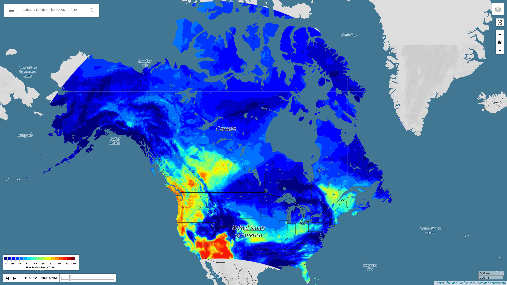

Fire Weather Forecast Model Documentation¶
{kind=link}
Overview:¶
The Canadian Forest Service Fire Weather Index (FWI) System, which has been adopted by wildfire agencies around the world, estimates how past/current/future weather affect wildfire behavior by tracking moisture content within the varied forest fuel layers across the landscape. Forecast predictions of the FWI parameters are used by provincial wildfire agencies as input to operational wildfire models. The output generated by these wildfire models is used to determine how finite resources (i.e., fire crews, aircraft etc.) for fire suppression response are deployed.
While the main concepts of the FWI system are applied widely, forecast implementations differ. The current operational FWI system in Canada interpolates noon-local weather forecast data from 900 point locations across the country to empirically derive the six different indices/codes that comprise the system.
The aim of this work is to revamp the FWI system to fully utilize numerical weather prediction (NWP) model calculations of fuel moisture codes/indices at every grid point within an NWP model, at 4-km and 12-km spatial resolution. The new NWP derived FWI system, named the Fire Weather Forecast (FWF) system, also resolves the more-weather-sensitive moisture codes/indices at a one-hour temporal resolution while the less-sensitive codes/indices are solved for once daily at noon local time.
All the FWF products and associated meteorology are available on an interactive webpage with zoomable map, popup point forecast functionality, and active model comparison to observed meteorology/FWI values. The webpage and model were actively developed with input from Northwest Territories Government’s wildfire specialists and British Columbia Wildfire Service forecasters with the goal of providing new high spatial and temporal resolution FWI inputs for their operational wildfire models and daily incident command briefings.